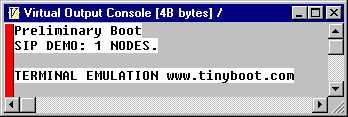

Virtual Console
The virtual console is a replacement for a dumb terminal. Many Forth words are terminal oriented, so a small memory area is provided to act as a console. To display the console data, the virtual console invokes the target word VCON$ ( -- addr len ) to get the address and length of the data. Then it reads the data from the target board. It only handles two types of control characters: CR and LF. All other non-ASCII characters are displayed as hex numbers within brackets.
The target words _TYPE and _EMIT send output data to this buffer. At startup, TYPE and EMIT initially use these. If there is some other output device, they are usually redirected to new versions of TYPE and EMIT.

In this example, the board's secondary boot program displayed some text. If an LCD terminal had plugged into the SPIX bus, the terminal's boot code would have redirected console output to the LCD and the virtual console would be blank.
The virtual console is at the end of WATCH.G.
Once the console buffer fills up, further characters are ignored. CON$ can be redefined (see the test file AV.FF) to enable it to hold more text.